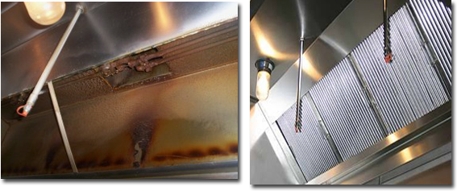
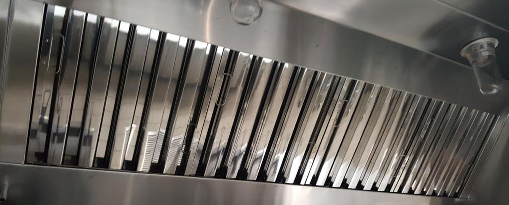
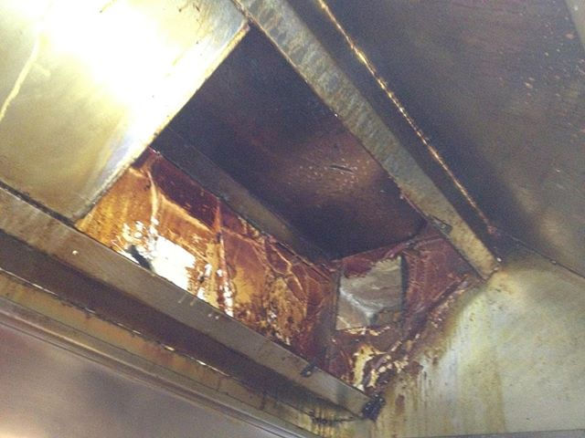
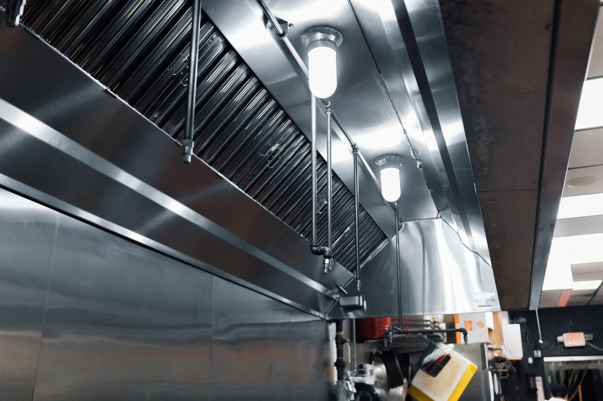
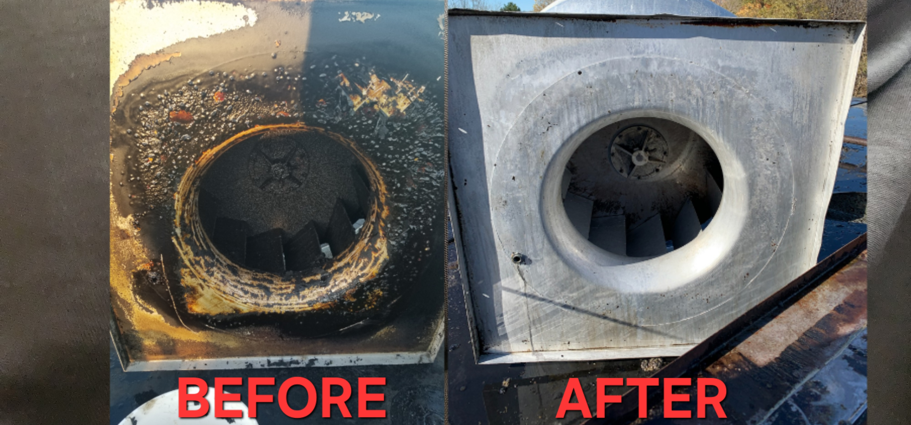
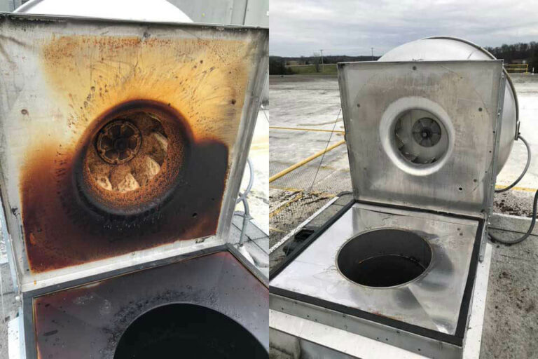

安全第一清洁餐馆洗炉头清洗前后案例
一张照片，比任何介绍都更有说服力。 安全第一炉头清洁公司 为餐馆和商业厨房提供专业炉头清洗、 油烟罩清洁、排风管道除油、排风风机及屋顶设备清洗服务。 通过真实的 Before & After 清洗前后照片， 您可以直观看到油污、积碳和顽固油垢被清除后的效果。
为什么要看清洗前后对比？
商用厨房每天烹饪都会产生大量油烟。 油脂会逐渐附着在油烟罩、过滤网、排风管道以及排风机内部。 很多油污藏在平时看不到的位置，因此单纯清洁厨房表面并不能代替专业的排烟系统清洁。
通过清洗前后的照片，可以清楚看到油污堆积程度以及专业清洗后的实际效果， 同时也方便餐馆老板保存清洗记录。
案例一：餐馆油烟罩深度清洗
Restaurant Hood Cleaning Before & After
清洗前 Before

清洗前：油烟罩内部长期积累油污和油垢
清洗后 After

清洗后：油污被深度清除，油烟罩恢复整洁
案例二：重油污炉头清洗
Heavy Grease Hood Cleaning
清洗前 Before

清洗前：长期高温烹饪造成顽固油垢和积碳
清洗后 After

清洗后：高温高压设备深度除油后的效果
案例三：排风风机清洗
Commercial Exhaust Fan Cleaning
清洗前 Before

清洗前：风机叶片和内部出现明显油脂堆积
清洗后 After

清洗后：风机内部油垢被清除，有助于保持正常排风
我们重点清洗哪些位置？
餐馆炉头及油烟罩
油烟罩内部油污
排风管道积油
过滤网及油网
蘑菇头排风设备
蜗牛风机
屋顶排风风机
厨房设备周边重油污
专业清洗带来的好处
减少油污堆积
降低厨房火灾隐患
改善厨房排烟效果
减轻风机运行负担
改善厨房卫生环境
保留清洗前后照片记录
10多年餐馆洗炉头经验
安全第一炉头清洁公司 拥有15多年商用厨房排烟系统清洁经验， 长期服务中餐馆、西餐厅、Deli、披萨店、面包店、酒店厨房、 美食广场以及各种商业厨房。
我们使用专业高温高压清洗设备，根据不同厨房的油污程度、 炉头长度、排风系统结构和屋顶设备情况制定清洗方案。
温馨提示：
每家餐馆的厨房结构和油污程度不同。 页面中的 Before & After 照片用于展示实际清洗效果， 具体清洗范围和报价需要根据现场情况确认。
每家餐馆的厨房结构和油污程度不同。 页面中的 Before & After 照片用于展示实际清洗效果， 具体清洗范围和报价需要根据现场情况确认。
相关服务
联系我们预约洗炉头
如果您的餐馆炉头、油烟罩或排风系统已经出现明显油污， 可以直接拍几张照片通过短信发送给我们。 我们可以根据炉头长度、油网数量、油污程度及所在地， 为您提供初步清洗建议和报价。